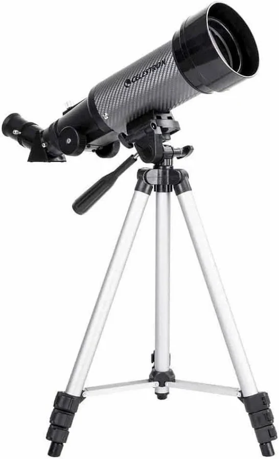

Celestron Travel Scope 70 DX
Weighing just a few pounds, this achromatic refractor fits in a backpack with its custom carrying case. Set it up in minutes for lunar craters, Jupiter's moons, or the rings of Saturn on vacation — proof that you do not need a large observatory to enjoy the night sky.
70 mm f/5.7 | Alt-az mount | ~$120
Learn more ↗